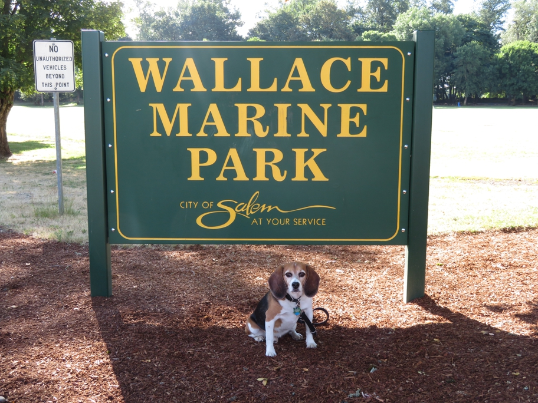

Somehow nothing photogenic happened during the two days we spent in the Willamette Valley. The fun started again on the way home. We entered Salem on Wallace Road and then found this park on the bank of the Willamette River.
Oregon Salem Wallace Beagle